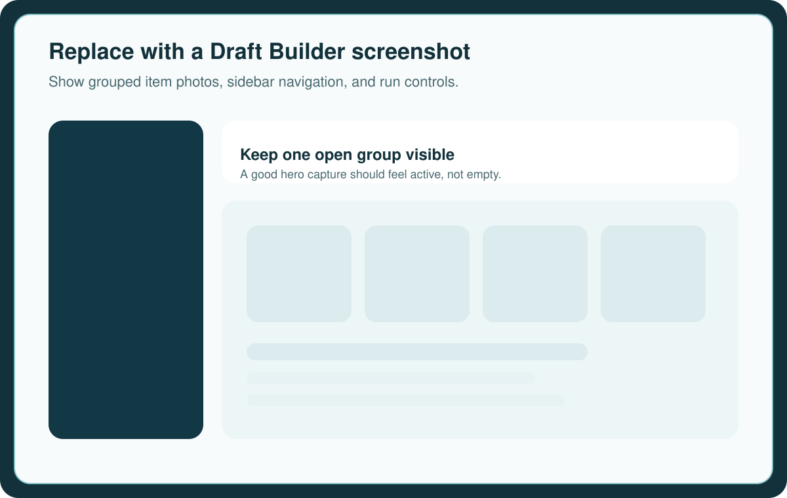
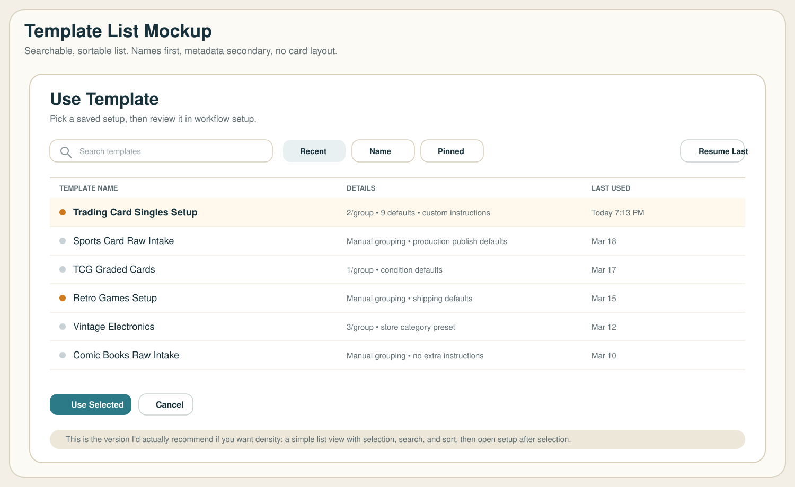
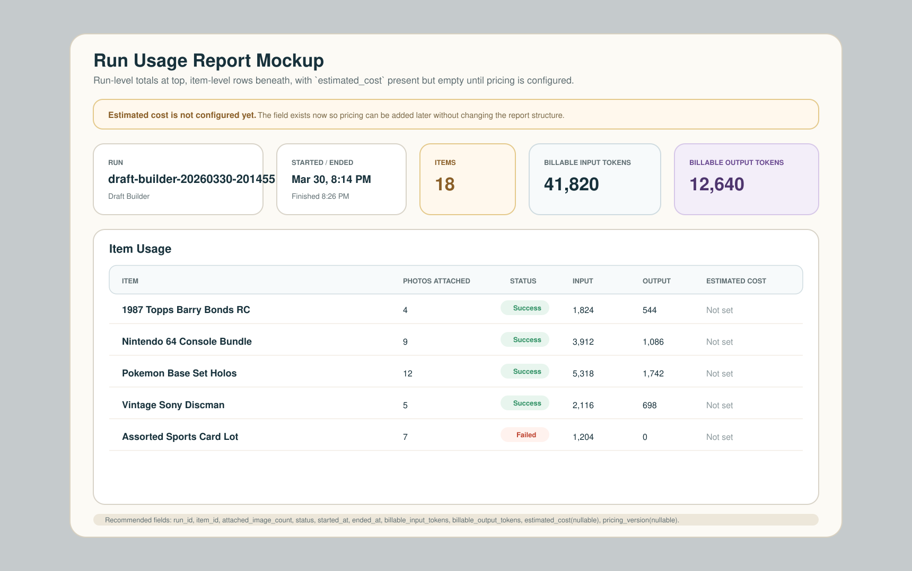
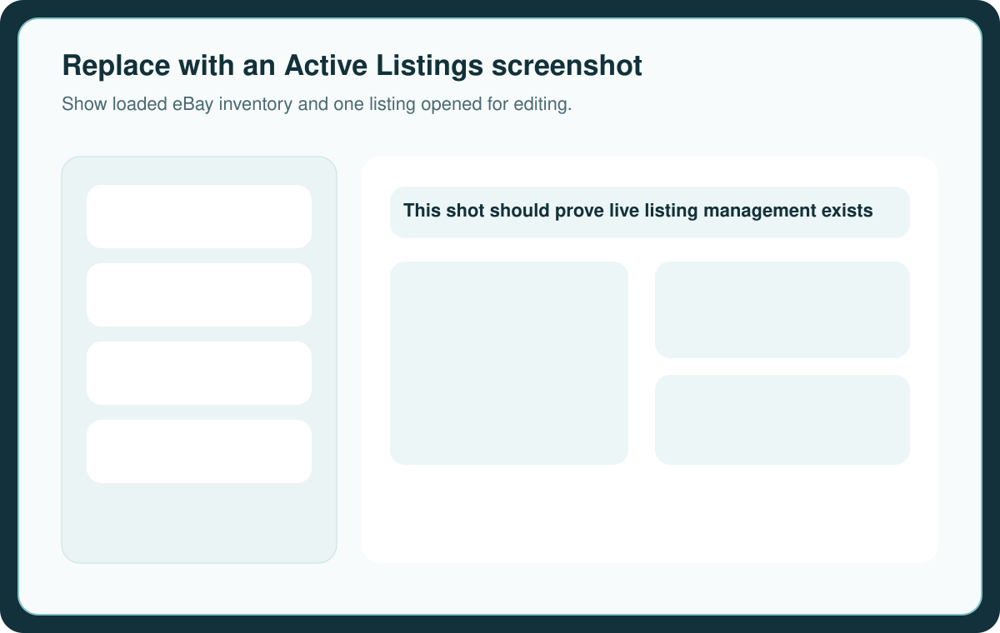

Set up the profile
Create your login, add at least one AI provider key, and connect eBay OAuth before expecting full run or publish behavior.
Workflow
Lakeview Lister is built around repeatable listing work. Import photos, group the item, run the right AI mode, review the output, then save, publish, or come back later through active inventory tools.

Operating loop
Create your login, add at least one AI provider key, and connect eBay OAuth before expecting full run or publish behavior.
Import photos into the library, drag them into groups, reorder them, and use one group per item or lot.
Use Draft Builder when you want listing-ready drafts. Use Fast ID when you want a quicker triage pass.
Save the best outputs as drafts, bulk update what needs cleanup, then publish and monitor the results.
App surfaces
Draft Builder
Use your setup template, category defaults, and selected AI provider to turn grouped photos into listing-ready results.
Fast ID
Get item name, price range, and confidence when you need speed more than deep draft editing.
Saved Drafts
Review, bulk update, fix specifics, and publish selected drafts when they are listing-ready.
Active Listings
Return to eBay listings after publish and keep working from a draft-style editing surface.
Visuals




Next step
Set up your account, connect an AI provider, and finish eBay access so you can move from intake to publish with less friction.